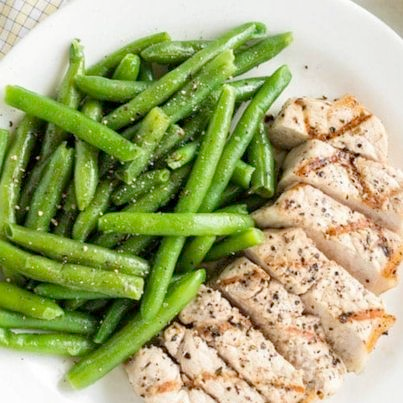
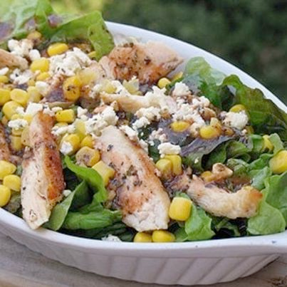
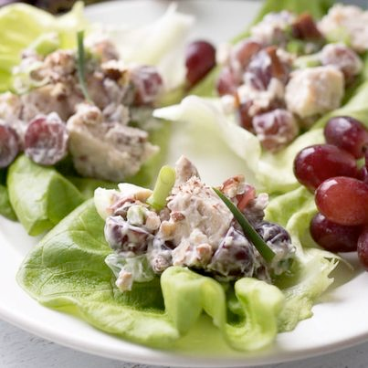
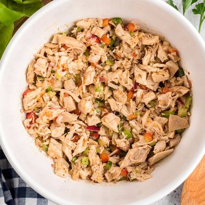
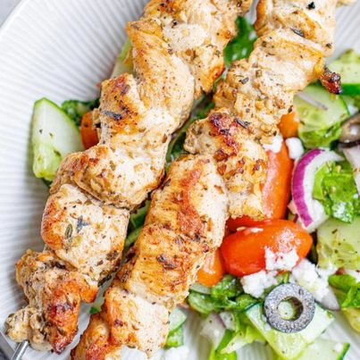

A healthy meal delivered up to your door, every single day
You can order food from this website

We are providing more than 40+ food recipes
1
Ingredients
1 Tablespoon butter 2 1/2 Tablespoons red bell pepper diced 2 1/2 Tablespoons shallots diced
1 Tablespoon minced garlic 3 Tablespoons mayonnaise 1 teaspoon horseradish sauce
1/2 Tablespoon Old Bay seasoning 1 teaspoon Worcestershire sauce 8 ounces crab meat small pieces of white meat 1 large egg
1 teaspoon hot sauce we used Franks 1 Tablespoon fresh parsley chopped 1/2 cup breadcrumbs 2 Tablespoons olive oil for frying
Instructions
Melt butter in skillet over medium heat. Sauté red bell pepper, shallots, and garlic until soft. Set aside. In a medium bowl, whisk together mayonnaise, horseradish sauce, Old Bay seasoning, and Worcestershire sauce. Combine the mayonnaise mixture, sautéed vegetables, crab meat, egg, hot sauce, parsley, and breadcrumbs. Use gloved hands to form 6 patties. If you feel that your patties are not solid enough, you can sparingly add a little more breadcrumbs to get them where you want them to be. Heat olive oil in skillet over medium-high heat until shimmering. Cook patties on both sides until browned, about 2-3 minutes per side. Drain patties on paper towels. Serve with tartar sauce.
2
Ingredients
1 pound of boneless pork chops about 4 chops 1 teaspoon Kosher salt 1/4 teaspoon freshly ground black pepper
3 tablespoons lemon juice 3 tablespoons olive oil 3 fresh parsley sprigs
1/4 teaspoon dried thyme 1 bay leaf 1 clove of mashed garlic
Instructions
Rub salt and pepper into the meat. Mix the other ingredients in a dish, add the pork and turn to coat. Place a lid on the dish. Turn and baste the meat 3 or 4 times during its marination period. Marinate for a minimum of 2 hours, 6-12 hours is even better. Before cooking, scrape off the marinade and dry the meat thoroughly with paper towels. Marinated meat needs to be dried off before cooking or it will not brown properly. Preheat grill to medium high heat. Wad up a piece of paper towel, add some canola oil to the towel. Using a pair of tongs, rub the oiled paper towel on the grill grates. Cook pork chops undisturbed for 4 minutes per side. Turn heat down to medium-low, move pork to an area of the grill without flame. Close lid and continue cooking until internal temperature reaches 145 F, about 5-10 minutes depending on the thickness of your chops. Remove from grill to a cutting board. Cover chops with foil to keep warm and allow them to rest for 5 minutes. Slice and serve.
3
Ingredients
10 cups spinach leaves stems removed (this yields 4 cups after steaming) – (I used romaine lettuce, I did not wilt it) 1/2 cup frozen corn kernels I used canned
1/2 cup 4-oz chevre cheese, coarsely crumbled (I used garlic feta cheese) Chicken 16 ounces boneless skinless chicken breasts olive oil for brushing
16 ounces boneless skinless chicken breasts olive oil for brushing dash of salt and pepper Vinaigrette
1/4 cup extra virgin olive oil 1/4 cup red wine vinegar 1/4 cup water
2 tbsp tomato paste 2 tbsp finely chopped fresh basil I used 2 tsp dried 1 tbsp finely chopped fresh oregano I used 1 tsp dried
1 tsp minced garlic 1 tsp sugar 1/4 tsp pepper or to taste salt to taste
Instructions
Heat a stovetop grill pan over high heat. Lightly brush both sides of the chicken breasts with oil. Reduce the heat to medium-high; cook for 5 minutes per side or until lightly browned and thoroughly cooked. Transfer to a plate and sprinkle with salt and pepper. Cover to keep warm. While the chicken is cooking, whisk together the vinaigrette ingredients in a small bowl. Rinse the spinach in cool water. (I skipped the next section for wilting as I used romaine instead) Transfer to a Dutch oven over medium-high heat. Cover and cook without additional water, except for the drops that cling to the leaves, for 2 minutes or until slightly wilted. Uncover and remove the pan from the heat. Slice the chicken into 1/2 inch diagonal strips. To assemble the salads, spread steamed spinach on each plate. Top with the chicken strips, corn, and chevre cheese. Stir the vinaigrette and drizzle it over the salads.
4
Ingredients
3/4 cup light mayonnaise pinch of dried ginger 1/2 tsp. salt
3 cup cooked chicken or 3 cans 1 1/2 cup red seedless grapes halved 1 cup sliced celery
1/3 cup sliced green onion 1 cup chopped pecans
Instructions
Combine mayonnaise, ginger and salt in large mixing bowl Stir in chicken, grapes, celery, green onion, and pecans. Serve on a lettuce leaf or sandwich buns.
5
Ingredients
12 oz cooked chicken rotisserie, shredded or cubed 1/4 cup celery diced. 1-2 ribs 1/4 cup white onion diced
1/4 cup red onion diced 1/4 cup red bell pepper diced
1/4 cup green bell pepper diced 1/4 cup olive oil 1 clove garlic minced
3 Tbsp white vinegar 1/4 cup chicken broth 2 tsp Cajun seasoning sweet or spicy salt and pepper to taste
Instructions
In a large bowl, combine chicken, celery, onions, and bell peppers. In another bowl, whisk together olive oil, garlic, vinegar, broth, and Cajun seasoning. Pour the dressing over the chicken and vegetables and toss well to coat. Cover bowl and refrigerate for 30 minutes. Stir a couple of times during the chilling process. Much of the excess dressing will be absorbed by the other ingredients in the salad. Serve on its own or on lettuce leaves.
6
Ingredients
1.4 lb chicken breasts boneless skinless, cut into chunks Marinade 4 cloves garlic minced, or 1 Tbsp garlic paste 1 tsp fresh thyme
1 Tbsp dried oregano 1 tsp cayenne pepper 4 Tbsp lemon juice the juice of 1 lemon 1/4 cup extra virgin olive oil
sea salt and black pepper to taste For the Salad 1 tsp dried oregano or 1 ½ teaspoon fresh oregano, chopped 1 1/2 Tbsp fresh lemon juice
1 tsp red wine vinegar 1/2 tsp garlic minced 3 Tbsp olive oil more if needed sea salt and black pepper to taste
1 head of lettuce medium, chopped 1 cucumber medium, sliced and quartered
5 oz grape tomatoes halved 1 small onion finely sliced
1/2 cup black olives sliced 1/2 cup feta cheese crumbles
Instructions
Cut your chicken into medium chunks. In a small bowl, combine salt, pepper, garlic, thyme, oregano, cayenne pepper, lemon juice and oil. Pour on chicken and toss to coat. Make sure all pieces are covered. Cover with plastic wrap or aluminium foil and refrigerate for at least 2 hours or overnight. When chicken is marinated, prepare the 6 skewers. Heat a grill pan on medium high heat. Add a bit of oil if needed. Place skewers on a grill pan (or regular grill) and cook on each side until nicely browned and cooked through.
7

Ingredients
1 (16.5-oz.) log refrigerated chocolate chip cookie dough (such as Pillsbury)
20 Oreo cookies, plus more for topping
2 (8-oz.) blocks cream cheese, softened
1/2 c. granulated sugar
2 large eggs
1/2 tsp. pure vanilla extract
Pinch of kosher salt
Warm caramel, for drizzling
Instructions
DIRECTIONS Preheat oven to 325°. Line an 8"-x-8" baking dish with parchment paper with a 2" overhang. Press cookie dough into bottom of baking dish. Top with a single layer of Oreos, breaking them up to fit, if necessary, and set aside. Make cheesecake layer: In a medium bowl using a handheld mixer or stand mixer with the paddle attachment, beat cream cheese until smooth. Beat in sugar, eggs, vanilla, and salt until fully combined. Pour over Oreo layer and smooth top. Top with broken Oreo pieces and bake until the center is only slightly jiggly, 30 to 35 minutes. Refrigerate until completely chilled, at least 3 hours and up to overnight. Remove cheesecake bar from baking dish and slice. Drizzle with warm caramel before serving.
8
Ingredients
1 (16.5-oz.) log refrigerated chocolate chip cookie dough (such as Pillsbury)
20 Oreo cookies, plus more for topping
2 (8-oz.) blocks cream cheese, softened
1/2 c. granulated sugar
2 large eggs
1/2 tsp. pure vanilla extract
Pinch of kosher salt
Warm caramel, for drizzling
Instructions
DIRECTIONS Preheat oven to 325°. Line an 8"-x-8" baking dish with parchment paper with a 2" overhang. Press cookie dough into bottom of baking dish. Top with a single layer of Oreos, breaking them up to fit, if necessary, and set aside. Make cheesecake layer: In a medium bowl using a handheld mixer or stand mixer with the paddle attachment, beat cream cheese until smooth. Beat in sugar, eggs, vanilla, and salt until fully combined. Pour over Oreo layer and smooth top. Top with broken Oreo pieces and bake until the center is only slightly jiggly, 30 to 35 minutes. Refrigerate until completely chilled, at least 3 hours and up to overnight. Remove cheesecake bar from baking dish and slice. Drizzle with warm caramel before serving.
9
Ingredients
1 (16.5-oz.) log refrigerated chocolate chip cookie dough (such as Pillsbury)
20 Oreo cookies, plus more for topping
2 (8-oz.) blocks cream cheese, softened
1/2 c. granulated sugar
2 large eggs
1/2 tsp. pure vanilla extract
Pinch of kosher salt
Warm caramel, for drizzling
Instructions
DIRECTIONS Preheat oven to 325°. Line an 8"-x-8" baking dish with parchment paper with a 2" overhang. Press cookie dough into bottom of baking dish. Top with a single layer of Oreos, breaking them up to fit, if necessary, and set aside. Make cheesecake layer: In a medium bowl using a handheld mixer or stand mixer with the paddle attachment, beat cream cheese until smooth. Beat in sugar, eggs, vanilla, and salt until fully combined. Pour over Oreo layer and smooth top. Top with broken Oreo pieces and bake until the center is only slightly jiggly, 30 to 35 minutes. Refrigerate until completely chilled, at least 3 hours and up to overnight. Remove cheesecake bar from baking dish and slice. Drizzle with warm caramel before serving.